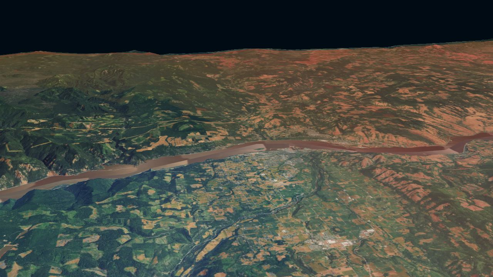
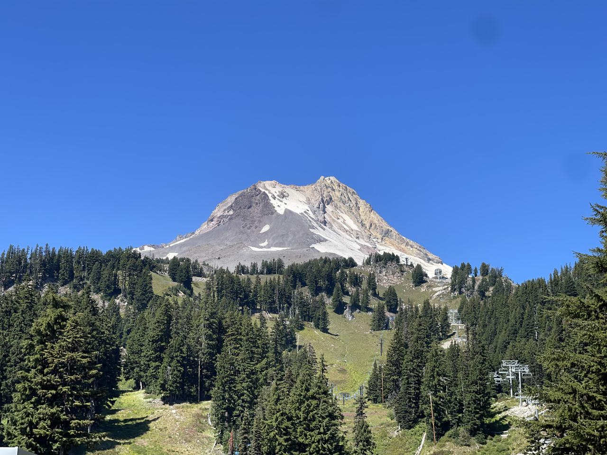

The Nation decides what leaves; no application applies the standard in full.
Publicly deployed
Working, with dated records
Fictional or sample data
00Standby
The Work Today
Affiliated Tribes of Northwest Indians, Climate Resilience
TERRA
Tribal Environmental Resilience and Resource Analytics
Nine applications for Tribal climate, energy, policy, and community work, built for Tribal Nations' own governance and stewarded by ATNI. Each runs on its own today; connecting them through shared contracts is the work ahead.
The Dynamic Drought Module is publicly deployed (09/29/2026). Connections between applications are designed but not built; 0.9.x release candidates are projected for mid-December 2026.
DDM migration into CAST planned; DDM is standalone today.PROJECTED Date not recorded
CAST and SHIELDClimate alert framework with parsers on captured feeds; SHIELD on fictional samples.
Foundation in place
Newest record
Local public dataDEMONSTRATION
SHIELD's presentation shell on fictional sample data; not yet connected to CAST's alert store.DEMONSTRATIONDDM migration into CAST planned; DDM is standalone today.PROJECTED Date not recorded
Land and Geography
ATNI GeoBaseOffline desktop workstation for renewable-energy siting with reason traces.
Development build
Newest record
Local public dataRECORDED
None recorded
Land Use AnalyzerPublic-data land and parcel tool; ownership classes, never names.
Local demonstration
Newest record
Local public dataRECORDED
Land Use Analyzer tested against a GeoBase demo prototype exchange contract; fictional sample data only (09/15/2026).DEMONSTRATION
Policy and Planning
Policy SentinelPolicy workbench: passage search, version comparison, and custody receipts.
Local workbench built
Newest record
Public documentsRECORDED
None recorded
TCR Policy ScannerClimate risk screening profiles from public federal data.
Reproduced earlier outputs
Newest record
Local public dataRECORDED
None recorded
Plan AssessorTurns planning PDFs into source-traced inventories and action registers.
Active development
Newest record
Public documentsRECORDED
None recorded
Records and Community
ATNI ResISTATNI resolution knowledge base; 19 ingested from 1,114 listed.
Recovery phase
Newest record
Public documentsDEMONSTRATION
None recorded
Community NavigatorCommunity graph on fictional data; presenter mode shows counts, never names.
Synthetic demonstration
Newest record
Fictional dataDEMONSTRATION
None recorded
Planned Shared Services
Tribal Nations RegistryProjected 11/15/2026, not built
Schemas and ContractsProjected mid-December 2026, not built
Nine applications across four domains: Climate and Hazards, Land and Geography, Policy and Planning, Records and Community. Each carries a maturity mark; the date beneath is its newest dated record. One, the Dynamic Drought Module, is publicly deployed.
02 What Each Runs On
Each application draws from its own sources: live public feeds, public data held locally, public documents, or fictional data. Solid lines show dated records on real inputs; dashed lines show samples, captured feeds, or fictional data.
03 Connections Today
No production data flows between applications. SHIELD is CAST's presentation shell, not yet connected to its alert store, running on fictional samples. One cross-application test: Land Use Analyzer exchanged with a separate GeoBase demo build; synthetic data, provider side only.
04 Shared Services Ahead
Four shared services, none built. A Tribal Nations Registry (today an empty placeholder inside CAST) and an automated release pipeline are projected for 11/15/2026; shared schemas and contracts, and TSDF review of each application, for mid-December 2026.
05 The Target Standard
The Nation decides what leaves: a public release, a view without a copy, or a refusal. The Tiered Sovereign Data Framework (TSDF v0.9.8) is the standard each application is built toward; none applies it in full yet.
Larger Diagram
Use the arrow keys to scroll the diagram.
No data moves between applications in this diagram; dotted lines are projected, not built.
03Applications
One Application
Select an application to see its capabilities, evidence dates, inputs, connections, and next steps.
Climate Monitoring Climate and Hazards
Dynamic Drought Module
Drought, heat, fire, and water conditions from federal sources; rich for the U.S., limited for Canada and Mexico.
Publicly deployedRECORDEDNewest record
What to know Standalone today, not yet part of CAST. Makes no forecasting or warning-performance claim.
1 What it does today
A public web map that draws from federal sources to show drought, heat, fire-weather, and water conditions; coverage is rich for the U.S. and limited for Canada and Mexico. Click a state, ecoregion, or boundary for a composed impact briefing covering four hazards across three time horizons.
Publicly deployed v0.7.0 tagged 09/11/2026, publicly deployed 09/29/2026. v0.8.0 in development; automated checks failing as of 10/05/2026 (3D interaction tests), not yet accepted or deployed.
RecordedCondition and event layers U.S. Drought Monitor, Standardized Precipitation Index (SPI), seasonal outlooks, HeatRisk, fire perimeters, smoke plumes, and weather alerts (09/09/2026).
RecordedStation readings USGS streamgages, NRCS SNOTEL, Reclamation Hydromet and AgriMet (read unavailable without an optional proxy), and Army Corps reservoirs (09/09/2026).
RecordedImpact briefing Click any state, ecoregion, or boundary for a composed briefing across four hazards and three time horizons (09/10/2026).
RecordedShare and embed A link carries the full view (09/29/2026); iframe embedding lets any site host the map (embed date not recorded).
RecordedDesktop 3D fire view A three-dimensional terrain view for active fire context (09/11/2026).
3 What it runs on
Live public feedsRECORDEDRECORDED
Live federal drought, heat, fire, and water feeds (deployed, v0.7.0).
4 Connections to other applications
DDM migration into CAST planned; DDM is standalone today.PROJECTED Date not recorded
Migration into CAST planned (date not recorded); DDM is standalone today.
5 Projected role in TERRA
Today Publicly deployed
PROJECTED
Standalone public drought monitor with a planned migration into CAST. The mid-December 2026 release candidates are the program's projection.
6 Next in its own plan
Finish and verify v0.8.0
Adapt priority outputs to CAST's module contract
Verify standalone and integrated experiences for the 0.9.x candidate
Climate Hazards Climate and Hazards
CAST and SHIELD
A planned framework of four hazard modules; today the foundation, alert parsers, and a flood proof of concept exist.
Foundation in placeNewest record
What to know SHIELD is the presentation layer, not a hazard engine; it shows no current alerts today.
1 What it does today
Climate Alert and Severity Tracker: a planned framework of four hazard modules (drought and heat, flood and coastal, severe weather, and snow and ice). Today the foundation, the alert parsers (replayed on captured feeds), and a standalone flood proof of concept on synthetic gauges exist. SHIELD is its presentation layer, a phone-first alert dashboard designed for low-connectivity communities and designed to extend across shared watersheds to First Nations.
Foundation in place Phase 0.1 Foundation complete 07/17/2026; Phase 0.2 data layer begun, with no later record.
RecordedNormalized alert model A single model for alerts across agencies, with National Weather Service and Environment Canada parsers replayed against captured feeds (07/17/2026).
RecordedHonest-status system The model requires every source to show its condition (current, cached, stale, degraded, unavailable) with an 'as of' time; in code and tests, not yet running live (07/17/2026).
RecordedVerified source registry Each data source is registered with its provenance tracked (07/17/2026).
SyntheticSHIELD dashboard shell SHIELD's interface runs on fictional sample data; it does not yet display current alerts (07/17/2026).
3 What it runs on
Local public dataDEMONSTRATIONDEMONSTRATION
Alert parsers on captured NWS and Environment Canada feeds; not yet scheduled.
4 Connections to other applications
SHIELD's presentation shell on fictional sample data; not yet connected to CAST's alert store.DEMONSTRATIONDDM migration into CAST planned; DDM is standalone today.PROJECTED Date not recorded
SHIELD is CAST's presentation shell on fictional samples, not connected to its alert store.
5 Projected role in TERRA
Today Foundation in place
PROJECTED
The climate alert hub, with four hazard modules and SHIELD as the presentation layer for communities.
6 Next in its own plan
Scheduled alert publication and cross-agency alert grouping
Connect SHIELD to current alert feeds
Drought and Heat module via the DDM migration
Geospatial Planning Land and Geography
ATNI GeoBase
Local-first desktop map workstation for transparent renewable-energy siting.
Development buildNewest record
What to know Private development build; no public repository.
1 What it does today

3D Terrain View
Three-dimensional terrain with aerial imagery and a modeled wind resource layer, rendered on the engine from GeoBase's development build (3D terrain verified 08/11/2026). A visual showcase on public data, not the desktop application.
Terrain: USGS 3DEP 10 m. Imagery: USDA NAIP via USGS The National Map. Wind: NREL WIND Toolkit with ESA WorldCover 2021 (contains modified Copernicus Sentinel data (2021) processed by ESA WorldCover consortium; CC BY 4.0). Engine: CesiumJS (Apache-2.0).
A local-first desktop map workstation (zero network requests observed in exercised launches) for transparent renewable-energy siting. Hard exclusions, soft constraints, and a reason trace for every result; coordinate reference systems, custody, and provenance travel with the work. In the private development build, one sovereignty control is enforced and observed: with the Tribal-context package attached, opportunity export is denied and a one-way network latch engages (08/11/2026, reconfirmed 09/30/2026). The remaining controls, including the default of unclassified data to Sovereign Restricted (T3), are designed but not enforced.
Development build 0.1.0-development.0; full sovereignty controls designed but not yet enforced, except one export denial observed enforced (08/11/2026, reconfirmed 09/30/2026). Partial verification on 09/30/2026.
2 Dated evidence
RecordedOffline runtime Zero network requests observed; the full application runs without an internet connection (08/11/2026).
RecordedLocal terrain and imagery Terrain and satellite imagery for a prototype area of Washington, served from local files (09/10/2026).
Recorded3D terrain display Three-dimensional terrain and aerial imagery with a modeled wind resource layer, rendered in the browser on the engine verified in the development build (08/11/2026).
RecordedSolar irradiation layers Solar irradiation with a twelve-month scrubber; no capacity claims (09/10/2026).
PartialWind resource at three heights Wind resource at three hub heights; no capacity claims. Display is partial and not yet committed (09/10/2026).
SyntheticExclusion zones and reason traces Every siting result carries a reason trace explaining which constraints applied (verified on fictional sample data, 08/11/2026).
3 What it runs on
Local public dataRECORDEDRECORDED
Terrain, imagery, and solar irradiation layers for a prototype area of Washington (09/10/2026).
4 Connections to other applications
None recorded
The recorded exchange joins Land Use Analyzer to a separate GeoBase demo build, not this workstation.
5 Projected role in TERRA
Today Development build
PROJECTED
Shared geographic baseline and offline GeoPack for Tribal planners.
6 Next in its own plan
Repair verification repeatability and reach the minimum sovereign map milestone
Enforce governance controls in the runtime
Projected TERRA role: shared geographic baseline and offline GeoPack for planners
Land Records Land and Geography
Land Use Analyzer
Public-data land and parcel tool: ownership classes, transfer history for one county, and exports.
Local demonstrationNewest record
What to know Parcels owned by Tribal governments appear as an ownership class inferred from public assessor records; Tribal-government parcels and viewport class counts are visible in the local demonstration builds (not public). Tribal land status, trust, and Treaty context layers are withheld pending a naming-and-harm review.
1 What it does today
A public-data land and parcel tool that shows ownership class, transfer history (one county in the local demonstration), and source-aware exports. This build names no one; every owner is shown as a class.
Local demonstration 0.1.0; its first two milestones complete (verified 09/01/2026); current implementation as of 09/15/2026. Public deployment not yet authorized.
RecordedCounty parcel map A reviewed single-county parcel map with PNG export, and a separate two-county local demonstration of 82,178 public parcels (09/15/2026).
RecordedTransfer timeline Ownership transfers over time for the one county that publishes transfer documents (09/15/2026).
RecordedSelection export Export the parcels selected on the loaded map as JSON or CSV; a zipped Shapefile can be loaded as an area (09/15/2026).
SyntheticExchange-protocol provider Tested against fictional TERRA interchange sample data (09/15/2026).
3 What it runs on
Local public dataRECORDEDRECORDED
Public county parcel records across a two-county, 82,178-parcel demonstration.
4 Connections to other applications
Land Use Analyzer tested against a GeoBase demo prototype exchange contract; fictional sample data only (09/15/2026).DEMONSTRATION
Tested against a separate GeoBase demo build on synthetic data, provider side only (09/15/2026).
5 Projected role in TERRA
Today Local demonstration
PROJECTED
Land records and parcel analysis with shared contracts across the portfolio.
6 Next in its own plan
Transaction-quality adapter and federal Tribal reference integration
Naming-and-harm review before any public release
Production hosting
Policy Analysis Policy and Planning
Policy Sentinel
Policy source-reference workbench: passage search, version comparison, and custody receipts.
Local workbench builtNewest record
What to know Not legal advice.
1 What it does today
A sovereignty-centered policy source-reference workbench. It searches a sealed local corpus of bounded authoritative sources, explains why each record appears (demonstrated on synthetic records; the real corpus is general jurisdiction), keeps exact text changes between versions, and never implies a legal conclusion; no scheduled refresh.
Local workbench built Local workbench complete as of 09/05/2026; general development active, newest record 09/24/2026. Two source reviews carry a scheduled expiry of 10/05/2026 (set in the 09/05/2026 review record); a court-opinion review expires 10/15/2026.
RecordedPassage search Search across a sealed corpus of 210 works and 21,209 evidence segments (09/05/2026).
RecordedBill version comparison Compare versions of a bill with exact text differences preserved (09/05/2026).
RecordedFindings with counterevidence Three findings, each kept with its counterevidence alongside the supporting passages (09/05/2026).
RecordedReplayable custody receipts Retained objects replay with their receipts (09/05/2026).
3 What it runs on
Public documentsRECORDEDRECORDED
A sealed local corpus of 210 policy works and 21,209 evidence segments.
4 Connections to other applications
None recorded
No connection to another application is recorded.
5 Projected role in TERRA
Today Local workbench built
PROJECTED
Policy source reference with expanded coverage and TERRA interchange.
6 Next in its own plan
Identity and scenario evidence layers
Local release candidate with renewed source reviews
Nationwide source coverage and TERRA interchange
Climate Risk Screening Policy and Planning
TCR Policy Scanner
Climate physical-risk screening profiles for federally recognized Tribal Nations.
Reproduced earlier outputsNewest record
What to know Screening diagnostics from public data, not validated science, and not a Nation's own assessment. The records do not show Nation review of profiles or packets; that review should come before any use.
1 What it does today
Builds climate physical-risk screening profiles for federally recognized Tribal Nations from public data, each paired with an advocacy packet document. A public logic page explains how public data becomes a profile.
Reproduced earlier outputs 0.8.9 tagged locally 09/09/2026 (reproduced the earlier system's outputs, not validated science); consolidation active. The 10/05/2026 record withdrew the relocation verification procedure; a replacement was designed and two supplied-evidence components built, then paused for owner discussion. The 0.8.9 parity record (09/09/2026) stands.
2 Dated evidence
RecordedProfile and packet builder Builds per-Nation screening profiles and advocacy packets. 88 registry entries have no profile yet; packets produced for five pilot Nations (09/09/2026).
RecordedLegacy-system reproduction 503 profiles reproduced the outputs of the earlier system exactly (09/09/2026).
RecordedOffline generation Five pilot packets regenerated with the network turned off (09/09/2026).
PartialDisclosure gates Five pilot packets checked by disclosure gates that report findings without blocking (09/09/2026); one trips on a cached citation. The public logic page explains the pipeline (09/24/2026).
3 What it runs on
Local public dataRECORDEDRECORDED
Public federal datasets; 503 Tribal profiles that reproduced the earlier system's outputs exactly.
4 Connections to other applications
None recorded
No connection to another application is recorded.
5 Projected role in TERRA
Today Reproduced earlier outputs
PROJECTED
Climate risk screening with replacement verification under owner control and reconciled profiles.
6 Next in its own plan
Build and run the replacement verification procedure under owner control
Reconcile profile counts across the full set and correct source citations toward 0.9.x
Planning Analysis Policy and Planning
Plan Assessor
Turns planning PDFs into inventories and action registers traced to their source pages.
Active developmentNewest record
What to know No public repository; authored test controls are not real-world accuracy.
1 What it does today
Takes planning documents (PDF) and produces inventories and action registers an analyst can inspect against the original page. Typed queries and review decisions.
Active development Active development, newest record 10/05/2026; no release version. All results are development validation on previously public planning documents.
2 Dated evidence
RecordedSource-linked inventory Every inventory item and action links back to its location in the original document (10/04/2026).
RecordedTyped query compiler Structured queries over the extracted inventory, with stated actor links (10/04/2026).
PartialTable reconstruction Reconstructs tables from native PDF geometry; four tables on two pages reconstructed on development pages, general table accuracy not established (10/05/2026).
RecordedReview pages and export Script-free HTML review pages and JSON export for analyst workflow; rendered pages never checked in a browser (10/04/2026).
3 What it runs on
Public documentsRECORDEDRECORDED
Previously public planning documents parsed from native PDF geometry.
4 Connections to other applications
None recorded
No connection to another application is recorded.
5 Projected role in TERRA
Today Active development
PROJECTED
Planning document assessment with end-to-end acceptance testing and measured usefulness.
6 Next in its own plan
Accept the assessment type definitions and score the development test panel
End-to-end acceptance testing and reopen verification
Measured usefulness with working analysts
Resolution Knowledge Records and Community
ATNI ResIST
Turns ATNI resolutions into a searchable, cited knowledge base; designed to run offline.
Recovery phaseNewest record
What to know Prototype under recovery; charter awaiting signature.
1 What it does today
A tool that turns ATNI's resolutions (1,114 listed, 19 ingested; 2007 to June 2026) into a searchable, cited knowledge base. Designed to run offline; v1 pages still load third-party fonts and scripts. Clause provenance (document, page, position) is designed but not built; the tool is designed never to paraphrase or generate resolution text.
Recovery phase Recovery phase R0 (handoff 09/04/2026): 87 tests pass, 33 held back by one known defect.
2 Dated evidence
PartialFull-text search and timeline Search across resolutions by text, themes, and timeline over a 2023 sample; v1 web pages currently return errors (09/03/2026).
PartialClause parser Parses WHEREAS and RESOLVED clauses with verbatim text; known defects drop some final RESOLVED clauses (09/04/2026).
PartialEvidence export DOCX export with legal citations; no document, page, or position provenance stamps yet. v1 behavior on a 19-resolution 2023 sample (09/03/2026).
PlannedPrecedent brief Quotes prior resolutions word for word to support Tribes drafting a new resolution.
3 What it runs on
Public documentsDEMONSTRATIONDEMONSTRATION
A v1 prototype (February 2026) on a 19-resolution 2023 sample; newest record is the 09/04/2026 recovery handoff.
4 Connections to other applications
None recorded
No connection to another application is recorded.
5 Projected role in TERRA
Today Recovery phase
PROJECTED
ResIST has no 0.9.x target or December date in its records. Its projected role is a searchable resolution knowledge base for ATNI governance.
6 Next in its own plan
Complete recovery phase and harden OCR processing
Grouping, query, and the precedent brief
Command-line interface for batch operations
Community Connections Records and Community
Community Navigator
Local-first, permission-filtered community graph; need-to-people routing is the goal.
Synthetic demonstrationNewest record
What to know Everything shown so far uses fictional data.
1 What it does today
A local-first 3D graph of a community: people, committees, organizations, skills, and needs. A Rust core decides what each viewer may see (permission projection tested in code; no viewer-switching control in the application); presenter mode never shows a person's name on stage. Visuals verified headless only.
Synthetic demonstration Synthetic convention demonstration (09/14/2026) with 60 fictional people, 15 committees, and 12 organizations; no release tag.
Recorded3D community graph Interactive three-dimensional graph of people, committees, organizations, and skills; visuals verified headless only (07/06/2026).
RecordedPresenter mode A display mode that never shows a person's name on stage; verified headless, not on a projector (09/14/2026).
PartialEncrypted QR intake A form that seals entries in the browser; relay built but not yet deployed (08/11/2026).
PlannedNeed-to-people routing Route a stated need to the people and organizations positioned to meet it.
3 What it runs on
Fictional dataDEMONSTRATIONDEMONSTRATION
A synthetic community: 60 fictional people, 15 committees, 12 organizations.
4 Connections to other applications
None recorded
No connection to another application is recorded.
5 Projected role in TERRA
Today Synthetic demonstration
PROJECTED
Community connection and need-to-people routing, gated by consent and committee approval before any real data.
6 Next in its own plan
Consent sign-off and facilitator key ceremony
Committee approval before any intake of real data
Routing screen and deployment
No per-application release dates; the newest record date is not a release date.
04Timeline
Dated Records
Recorded milestones below the records date, projected deliverables above; always apart.
Projected program deliverables
PROJECTED0.9.x Release Candidates Release candidates tagged; component reviews against TSDF v0.9.8 and license reviews complete; a draft resolution prepared for member Tribes' consideration (adoption is the membership's decision).
PROJECTEDMulti-Year Technical Roadmap A multi-year technical roadmap prepared for long-term development planning.
PROJECTEDAutomated Pipelines and Shared Services Automated testing and release pipelines across repositories; the Tribal Nations Registry as a shared reference service, with its contents and entry governance to be decided as part of the architecture.
PROJECTEDATNI-Held Infrastructure Hosting, domains, and accounts registered in ATNI's name.
PROJECTEDArchitecture Decision Record Finalized architecture decision record covering hosting, data services, and role-based access across the portfolio.
Records as of71 days until the projected 0.9.x release candidates
Recorded entries come from each project's dated records. Projected dates come from a working-draft program plan and are targets, not commitments. Individual applications' own plans do not set 0.9.x dates; the mid-December target is the program's.
No completion percentage; projected dates are targets from a working draft, not commitments.

05Objectives
Program Objectives
Five objectives by nine applications; only Objective 2 names each one.
Only Objective 2 names applications directly; it shows scope, not targets.
01Architecture and Account SovereigntyPlatform-wide infrastructure, held in ATNI's nameDeploy TERRA on infrastructure and accounts held in ATNI's name, so the platform does not depend on an outside vendor for custody; each Nation's data stays under that Nation's own governance.
Applies across the portfolio
02Software Suite 0.9.x ConsolidationAdvances each of the nine applicationsIntegrate, test, and ship tagged 0.9.x releases for every component under standardized design and sovereign data conventions.
Dynamic Drought Module: Named
CAST and SHIELD: Named
ATNI GeoBase: Named
Land Use Analyzer: Named
Policy Sentinel: Named
TCR Policy Scanner: Named
Plan Assessor: Named
ATNI ResIST: Named
Community Navigator: Named
03Engineering Operations and SecurityApplies across every repository and componentAutomate portfolio-wide testing, security, and release management within the ATNI Climate organization repositories.
Applies across the portfolio
04Data Sovereignty, Licensing, GovernanceApplies across every repository and componentApply TSDF conventions across every layer, review third-party licenses, and clarify ATNI's stewardship of the software.
Applies across the portfolio
05Multi-Year Strategy and SustainabilityProgram strategy beyond the 0.9.x windowBuild the executive-level strategic and technical roadmap for TERRA from 0.9.x through long-term operation, with non-federal sustainability.
Program strategy
No per-application progress or completion claims; Objective 2 names scope, not targets.
06Sovereignty
The Nation Decides
Four tiers, three governing rules, and a design standard no application applies in full.
Governance is architecture. TERRA is designed so that every layer encodes a sovereignty decision; the Nation determines what moves, what stays, and what is refused.
At T1 a view may travel while the data stays; at T2 raw transfer is permitted only when the agreement explicitly authorizes and documents it. Held by the Nation.
T0Open/Public Access Released by an authorized source; for Indigenous-governed information, release is an affirmative sovereign act, never presumed. Public federal and state sources are recorded here with their own conditions.
T1Community Network Access Shared among a trusted Indigenous network; views, not copies.
T2Negotiated Partner Access Named partners under a documented agreement with free, prior and informed consent that stays revocable, and benefits named in the agreement.
T3Sovereign Restricted Never leaves community systems under the Nation's own protocols. Withholding is itself sovereignty.
Governing Rules
Automated bulk ingestion of material without an established classification defaults to Sovereign Restricted (T3) pending review; documented public sources are recorded T0; human-directed entry stays recorded as unknown.
Moving data outward requires a documented decision by the Nation's authorized representatives.
A derivative inherits the tier of its most restrictive known input.
TSDF is v0.9.8, pre-release (document revised 07/14/2026); version 1.0 comes only by ATNI resolution. This site describes a design goal, not a compliance claim. One application is publicly deployed on live federal data; the remaining eight are development or demonstration builds working from public sources, sample data, or fictional data.
Tribal Nations retain exclusive custody of their data; TERRA delivers analytical engines and shared baseline layers, never a centralized repository.
02
Opening Code, Protecting Deploys
Core frameworks are intended for peer review; Tribe-specific instances are designed to operate in isolated, secure environments governed by the Nation.
03
Stewarded Release, Not Open Resale
Software releases are held under ATNI stewardship for the benefit of member Tribes. License terms are under review; consent comes from the member Tribes through ATNI's governance.
04
Once It Works, It Keeps Working
Standardized practices, automated pipelines, and thorough documentation are designed to keep the systems operational beyond any single person or funding cycle.
A design standard, not a compliance claim; no application applies it in full.
07Ledger
Evidence Ledger
All 13 connections with evidence state and date, the sources, and the credits.
All 13 connections and evidence dates
Dynamic Drought Module Live federal drought, heat, fire, and water feeds (deployed, v0.7.0).RECORDED
ATNI GeoBase Terrain, imagery, and solar irradiation layers for a prototype area of Washington (09/10/2026).RECORDED
Land Use Analyzer Public county parcel records across a two-county, 82,178-parcel demonstration.RECORDED
Policy Sentinel A sealed local corpus of 210 policy works and 21,209 evidence segments.RECORDED
TCR Policy Scanner Public federal datasets; 503 Tribal profiles that reproduced the earlier system's outputs exactly.RECORDED
Plan Assessor Previously public planning documents parsed from native PDF geometry.RECORDED
CAST and SHIELD Alert parsers on captured NWS and Environment Canada feeds; not yet scheduled.DEMONSTRATION
ATNI ResIST A v1 prototype (February 2026) on a 19-resolution 2023 sample; newest record is the 09/04/2026 recovery handoff.DEMONSTRATION
Community Navigator A synthetic community: 60 fictional people, 15 committees, 12 organizations.DEMONSTRATION
SHIELD's presentation shell on fictional sample data; not yet connected to CAST's alert store.DEMONSTRATION
Land Use Analyzer tested against a GeoBase demo prototype exchange contract; fictional sample data only (09/15/2026).DEMONSTRATION
DDM migration into CAST planned; DDM is standalone today.PROJECTEDPlanned
All tools into shared services: registry, schemas, release pipelines (projected).PROJECTEDPlanned
Trace
Select two applications to see what connects them and at what evidence state.
How to Read This
Filled: publicly deployed. Half: working with dated records. Hatched: fictional or sample data.
Solid: dated record on real inputs. Dashed: demonstration on sample or captured data. Dotted: projected, not built.
The date shown is the newest dated record for that application, not a release date.
Stage labels are summaries drawn from each project's own records, not assessments.
Each connection carries its own evidence state; an edge's state does not come from its endpoints.
Marks, lines, and inputs
Publicly deployed
Working, with dated records
Fictional or sample data
Dated record on real inputs
Demonstration on sample or captured data
Projected, not built
Live public feeds
Local public data
Public documents
Fictional data
Newest dated record for that application
Evidence Method
Status is drawn from each project's own dated records: handoffs, roadmaps, release notes, and CI records. Each application shows its newest record date. Projected items are targets, not commitments.
Each stage comes from that project's newest dated record; stage labels are summaries, not assessments.
Photographs and development by Patrick A. Freeland. Affiliated Tribes of Northwest Indians, Climate Resilience. No photograph is identified by place and none stands for a particular Nation. Elevation data from NOAA ETOPO1. Fonts: League Spartan and Poppins (SIL OFL).
No connection carries production data; each carries its own evidence state and date.
Record
v0.7.0 tagged 09/11/2026, publicly deployed 09/29/2026. v0.8.0 in development; automated checks failing as of 10/05/2026 (3D interaction tests), not yet accepted or deployed.
Dates come from each project's own records: handoffs, roadmaps, release notes, and CI records.
Record
Live federal drought, heat, fire, and water feeds (deployed, v0.7.0).
Dates come from each project's own records: handoffs, roadmaps, release notes, and CI records.
Record
Phase 0.1 Foundation complete 07/17/2026; Phase 0.2 data layer begun, with no later record.
Dates come from each project's own records: handoffs, roadmaps, release notes, and CI records.
Record
Alert parsers on captured NWS and Environment Canada feeds; not yet scheduled.
Dates come from each project's own records: handoffs, roadmaps, release notes, and CI records.
Record
0.1.0-development.0; full sovereignty controls designed but not yet enforced, except one export denial observed enforced (08/11/2026, reconfirmed 09/30/2026). Partial verification on 09/30/2026.
Dates come from each project's own records: handoffs, roadmaps, release notes, and CI records.
Record
Terrain, imagery, and solar irradiation layers for a prototype area of Washington (09/10/2026).
Dates come from each project's own records: handoffs, roadmaps, release notes, and CI records.
Record
0.1.0; its first two milestones complete (verified 09/01/2026); current implementation as of 09/15/2026. Public deployment not yet authorized.
Dates come from each project's own records: handoffs, roadmaps, release notes, and CI records.
Record
Public county parcel records across a two-county, 82,178-parcel demonstration.
Dates come from each project's own records: handoffs, roadmaps, release notes, and CI records.
Record
Local workbench complete as of 09/05/2026; general development active, newest record 09/24/2026. Two source reviews carry a scheduled expiry of 10/05/2026 (set in the 09/05/2026 review record); a court-opinion review expires 10/15/2026.
Dates come from each project's own records: handoffs, roadmaps, release notes, and CI records.
Record
A sealed local corpus of 210 policy works and 21,209 evidence segments.
Dates come from each project's own records: handoffs, roadmaps, release notes, and CI records.
Record
0.8.9 tagged locally 09/09/2026 (reproduced the earlier system's outputs, not validated science); consolidation active. The 10/05/2026 record withdrew the relocation verification procedure; a replacement was designed and two supplied-evidence components built, then paused for owner discussion. The 0.8.9 parity record (09/09/2026) stands.
Dates come from each project's own records: handoffs, roadmaps, release notes, and CI records.
Record
Public federal datasets; 503 Tribal profiles that reproduced the earlier system's outputs exactly.
Dates come from each project's own records: handoffs, roadmaps, release notes, and CI records.
Record
Active development, newest record 10/05/2026; no release version. All results are development validation on previously public planning documents.
Dates come from each project's own records: handoffs, roadmaps, release notes, and CI records.
Record
Previously public planning documents parsed from native PDF geometry.
Dates come from each project's own records: handoffs, roadmaps, release notes, and CI records.
Record
Recovery phase R0 (handoff 09/04/2026): 87 tests pass, 33 held back by one known defect.
Dates come from each project's own records: handoffs, roadmaps, release notes, and CI records.
Record
A v1 prototype (February 2026) on a 19-resolution 2023 sample; newest record is the 09/04/2026 recovery handoff.
Dates come from each project's own records: handoffs, roadmaps, release notes, and CI records.
Record
Synthetic convention demonstration (09/14/2026) with 60 fictional people, 15 committees, and 12 organizations; no release tag.
Dates come from each project's own records: handoffs, roadmaps, release notes, and CI records.
Record
A synthetic community: 60 fictional people, 15 committees, 12 organizations.
Dates come from each project's own records: handoffs, roadmaps, release notes, and CI records.
Record
v0.7.0 tagged 09/11/2026, publicly deployed 09/29/2026. v0.8.0 in development; automated checks failing as of 10/05/2026 (3D interaction tests), not yet accepted or deployed.
Dates come from each project's own records: handoffs, roadmaps, release notes, and CI records.
Record
Phase 0.1 Foundation complete 07/17/2026; Phase 0.2 data layer begun, with no later record.
Dates come from each project's own records: handoffs, roadmaps, release notes, and CI records.
Record
0.1.0-development.0; full sovereignty controls designed but not yet enforced, except one export denial observed enforced (08/11/2026, reconfirmed 09/30/2026). Partial verification on 09/30/2026.
Dates come from each project's own records: handoffs, roadmaps, release notes, and CI records.
Record
0.1.0; its first two milestones complete (verified 09/01/2026); current implementation as of 09/15/2026. Public deployment not yet authorized.
Dates come from each project's own records: handoffs, roadmaps, release notes, and CI records.
Record
Local workbench complete as of 09/05/2026; general development active, newest record 09/24/2026. Two source reviews carry a scheduled expiry of 10/05/2026 (set in the 09/05/2026 review record); a court-opinion review expires 10/15/2026.
Dates come from each project's own records: handoffs, roadmaps, release notes, and CI records.
Record
0.8.9 tagged locally 09/09/2026 (reproduced the earlier system's outputs, not validated science); consolidation active. The 10/05/2026 record withdrew the relocation verification procedure; a replacement was designed and two supplied-evidence components built, then paused for owner discussion. The 0.8.9 parity record (09/09/2026) stands.
Dates come from each project's own records: handoffs, roadmaps, release notes, and CI records.
Record
Active development, newest record 10/05/2026; no release version. All results are development validation on previously public planning documents.
Dates come from each project's own records: handoffs, roadmaps, release notes, and CI records.
Record
Recovery phase R0 (handoff 09/04/2026): 87 tests pass, 33 held back by one known defect.
Dates come from each project's own records: handoffs, roadmaps, release notes, and CI records.
Record
Synthetic convention demonstration (09/14/2026) with 60 fictional people, 15 committees, and 12 organizations; no release tag.
Dates come from each project's own records: handoffs, roadmaps, release notes, and CI records.